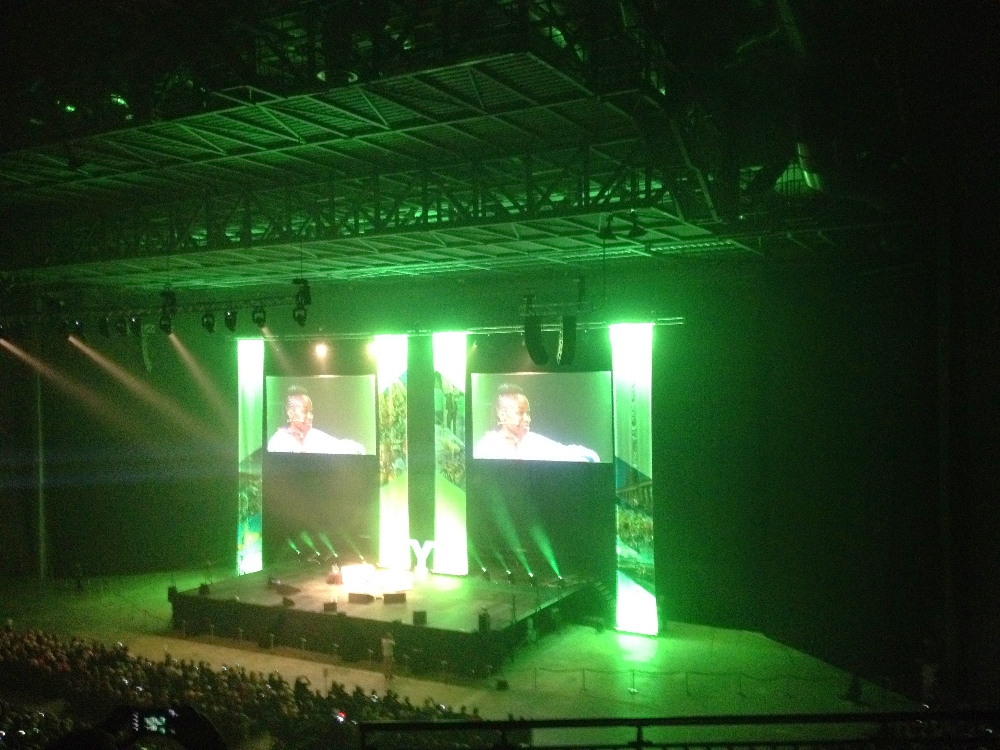

Grand Depart 2014
Having been a Games Maker, I was now going to be a Tour maker, as that is what the volunteers at the Tour de France Grand Depart in Yorkshire were going to be known as. The Tour had never had a group of dedicated volunteers before, but the organisers in Yorkshire, having seen how well the Games Makers had gone down in 2012, decided Yorkshire needed its own version.
 There was no real interview process. We had to sign up on-line and fill in an application form giving our details and previous volunteering experience. Our kick-off event was held at Leeds Arena, 5000 of us on a Saturday afternoon. Parking in central Leeds proved to a real pain in the arse, and the weather was foul. Nicola Adams, the Olympic gold medalist boxer was one of the guest, as was Tour legend Brian Robinson - the first British rider to finish the Tour de France in 1955 and the first to win a stage, in 1958.
{kind=link}
Our only training day was held at Elland Road Football ground. The training was very generic, and a lot of newbie's were a bit concerned that they wouldn't know what do do on the day. I told them that they would be fine as most of volunteering is common sense. We also picked up our uniform. It was sponsored and produced by George. We were warned that people were finding that the sizes were on the large size, but there was no formal swap facility. If we had a problem, we had to work it out between ourselves. I was fine with mine as the size was just right. The top was bright blue, and the showerproof jacket was flourescent lime green, as was the umbrella. The trousers were the best volunteer trousers I have ever had. They were a perfect size, a little bit showerproof, and unzip at the knee level, to turn into bermuda shorts. The bag was a drawstring affair that was cheap and nasty and wouldn't take any weight.
My volunteering spot was supposed to be in a village on the way to Hawes, and we had to meet up at stupid o'clock in a car park near Catterick Barracks. We had to be there early as the roads were going to be shut for the whole day practically. When we got there, a lot of the volunteers had failed to show up. We collected our bottles of water and small box of chocolates from the metal container set up as a sort of office. There wasn't a single person in charge. It seems each of the local authorities through which the route passes was in charge of their little patch, and had provided a minibus to take us to our volunteering spot. We had to re-organise ourselves into new volunteering teams so that the major spots on the route were covered. I ended up volunteering to be on the Cote de Buttertubs, which is where I'd wanted to be in the first place.
We set off in "The Little White Bus" which had had red spots added to it to mimic the Tour's Polka Dot climbers jersey. Our driver was Councillor David Blackie of Hawes and High Abbotside Parish Council. He was also a Richmondshire District Councillor, and a County Councillor for the Upper Dales. He was very proud that the Tour was coming through his patch. En route he explained that the Swaledale Shuttle had been set up by locals, led by himself, when the local bus company stopped the routes through the community.
We dropped some of the volunteers off in Hawes, but not until we had been given a whistle stop tour of the place. The place was "en fete" with a street market, bunting and displays everywhere, and even houses that had been people wanted a good spot on the side of the road. We were dropped off halfway up the Cote de Buttertubs, and made a number of observations. Firstly, the radio given to the supervisor didn't work. A motor cycle cop said theirs only just worked because we were miles from everywhere. Secondly, the port-a-loos that were supposed to have been delivered for the public to use wern't there (they never showed up). Thirdly, there were no stewards along the roadside, just a few local bobbies.
{kind=link}
On the steepest section of the climb, the road narrows and there are grassy banks on either side of the road, which were already filling up with people and cyclists who had climbed up three miles. At one point they were spilling onto the road, and two of the bobbies asked us if we cojuld keep the crowd under control. We pointed out that there were nine of us, and many thousands of them!Mike and I climbed up to the official top of the climb, where the slope had levelled off some. The Tour de France guy in charge of putting up the overhead signage marking the Summit decided it was too windy to even attempt it.
The Publicite Caravan passed through, throwing its freebies to the crowd. We were in a barricaded section so had to venture into the road to pass some of the fallen offerings to people. It was a cutback caravan, Not all the vehicles had made it across the Channel. In particular, the larger vehicles, which would have had problems getting on the ferry and navigating the Yorkshire lanes, ahd been left in France. There were however, some British centric vehicles. Yorkshire Tea, and McCain Oven Chips were prominent. Decided to keep liquid consumption to a minimum as that high up there were no trees or bushes to hide ehind.
Excitement mounted as the whirr of the TV helicopters could be heard in the distance. One came over quite early on to give the TV viewers the chance to see how big the crowds were awaiting the race. Excitement reached fever pitch once a helicopter was seen hovering over the road coming up towards us, which meant the race was coming. Then the motorcycle outriders started to go past. They were a mixture of French and British. The volunteers in the centre of Hawes told us subsequently that the British ones were quite friendly, tooting their horns, and waving to the crowd as they passed, but the French ones were, well French. Mike and I were then ushered back from our prime viewing spots as an official photographer's motorcycle stopped, but we still got a good view as the cyclists went past. There had been a break and Jens Voight was the first past us, followed by Nicolas Edet.
{kind=link}
The crowds at the road narrowing futher down the hill had made the narrowing even tighter, as this press photo shows, and apparently those at the back of the peleton came to a halt at the bottleneck, so the peleton came past us in two separate sections. They had got up a bit of speed as they approached as the incline had dropped significantly. Of course, once the peleton had passed we had the rest of the convoy pass us - team cars, police cars, etc, etc. Eventually, the crowd started to make their way back down towards Hawes, and we volunteers made our way back to our pick-up point, halfway back down.
It took Councillor Blackie ages to make it up to us, and he decided the best way to get us back to Catterick was to follow the race route. The roads of course were still closed, and we had to repeatedly convince the road closure people that we had to come through. This meant it took us ages, and many of us were beginning to need the loo quite a lot. We did stop the minibus in Masham as the other lady in the team was desperate, but were moved on by the police who were trying to keep the post race traffic moving. She got back on the minibus just before the policewoman was threatening to issue a ticket. As we finally pulled into the Catterick car park, I stood up in the bus, and informed all the guys that any man that went into the port-a-loo before me was dead when he came out.